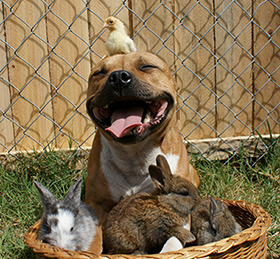
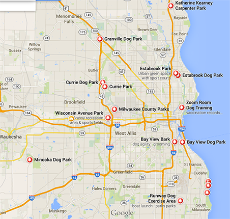

Owning a Dog
Most common breeds
There are many different types of dog breeds out there. The number one most common breed according to the American Kennel Club (2013) are Labrador Retrievers. The number two spot is held by German Shepherds, three is Golden Retrievers, fourth are beagles, fifth are Bulldogs, sixth are Yorkshire Terriers, seventh are Boxers, eight are Poodles, ninth are Rottweilers, and the tenth spot belongs to Dachshunds.
To see the complete list of most common breeds go to the:
American Kennel ClubPitbulls and bully breeds

Bully breeds. This term has been given to a variety of dogs and gives them an unfair reputation for being dangerously aggressive. Pit bulls are a breed of dog that falls under this category but with the right owner and training they can be very sweet and lovable dogs.
There are some myths that accompany Pit Bulls but they are untrue. One myth is that Pit Bulls have locking jaws. They have regular jaws like any other dog. Dr. I. Lehr Brisbin from the Universty of Georgia concluded after doing research that "...the American Pit Bull Terriers did not have any unique mechanism that would allow these dogs to lock their jaws. There were no mechanical or morphological differences..."
Below is a list of other dogs that fall into the category of Bully Breed:
- The boxer
- Alapaha Blue Blood
- The American Bulldog
- American Staffordshire Terrier
- Boston Terrier
- Bull Terrier
- Bulldog
- Bullmastiff
- French Bulldog
- Olde English Bulldogge
- American Pit Bull Terrier
- Renascence Bulldogge
- Staffordshire Bull Terrier
- Victorian Bulldog
- Great Dane
- Mastiff
- Pug
- Rottweiler
- Tibetan Mastiff
Dog parks in the area
Below are some local parks you can take your dog to get some exercise and interact with other pups and their owners:
- Runway dog exercise area 1214 E. Rawson Ave, Oak Creek, WI 53154
- Warnimont Park 5400 S Lake Dr, Cudahy, WI 53110
- Milwaukee County Parks 9480 W. Watertown Plank Rd, Milwaukee, WI 53226
- Bay View Bark 2209 S. 1st St, Milwaukee, WI 53207
- Estabrook Park 4400 Estabrook Pkwy, Milwaukee, WI 53211
- Currie Dog Park 3535 N. Mayfair Rd, Wauwatosa, WI 53222
- Minooka Dog Park 1927 E. Sunset Dr. Waukesha, WI 53189
- Granville Dog Park Milwaukee WI, 
- Be present with your dog at all times
- Keep your dog leashed until it is inside the park
- Have your dog under voice control or have it leashed
- Have your dog licensed
- Have proof of your dog's current rabies vaccination
Some parks are leashed and some are off-leash parks. Here are some friendly and helpful reminders while at the dog park.
Training
Training your dog can be a tricky task at times. With many books, and sites with various tips and techniques out there it can get confusing. Below is a short list of some possible places you could take your dog for training.
- K-9 Obedience Training Located in Menomonee Falls, K-9 Obedience Training Clube is a non-profit organization devoted to the training of dogs and their owners. Obedience and Agility are just some of the training classes that are offered.
- Best Paw Forward
Main office: 1005 Richards Road, Suite H • Hartland, WI 53029
262•369•3935 - Central Bark Doggy Day Care With several locations in Southeastern Wisconsin there is one near you!
You can also check out your local petsmart or petco for dog training classes.
Food and plant dangers
Plant Dangers
Plants are a nice touch indoors or outdoors, but there are certain plants that can be harmful you your pet. Below is a list of harmful plants and their symptoms. Petpedia is by no means a medical expert, please contact your vet if you feel your pet may have ingested any of the below items.- Acorns, Symptoms include increase thirst, and possible stomach pain
- Aloe Vera, Symptoms include diarrhea
- Amaryllis, Symptoms include nausea, vomiting and diarrhea
- Angel's trumpet, Symptoms include nausea, vomiting, dry warm skin and mouth, delirium
- Apples, Symptoms include stomach pain, vomiting, breathing difficulties, rise in blood pressure with delayed Symptoms
- Apricot, Symptoms include stomach pain, vomiting, breathing difficulties, rise in blood pressure with delayed Symptoms
- Arrowhead vine, Symptoms include burning irritation of mouth, throat and stomach which may be severe
- Azalea, Symptoms include vomiting, diarrhea, muscle weakness, drowsiness, and headache
- Baneberry, Symptoms include pain and swelling of mouth and throat, severe stomach pain, headache, dizziness, bloody diarrhea and urine, hallucinations, rise in heart rate
- Barberry, Symptoms include Burning sensation of mouth and skin, nausea and vomiting
- Bittersweet, Symptoms include vomiting, diarrhea, possible chills
- Blue cohosh, Symptoms include Severe stomach pain, salivation, nausea, vomiting, headache, fever, skin irritation
- Christmas Trees, Symptoms Mechanical obstruction, skin and eye irritation (sap)
- Daffodil, Symptoms include nausea, vomiting, diarrhea, skin irritation
- Geranium, Symptoms include possible skin irritation
- Holly, Symptoms include Nausea, vomiting, diarrhea
- Hydrangea, Symptoms include Stomach pain, vomiting, dizziness, headache, breathing difficulties, delayed symptoms possible
- Milkweed, Symptoms include stomach irritation, diarrhea, weakness, and loss of appetite
- Nightshade, Symptoms include stomach pain, vomiting, diarrhea, delayed symptoms are possible
- Peaches, Symptoms include stomach pain, vomiting, breathing difficulties, rise in blood pressure with delayed Symptoms
- Plums, Symptoms include stomach pain, vomiting, breathing difficulties, rise in blood pressure with delayed Symptoms
- Poison ivy, Symptoms include itching, rash, oozing sores, sweeling of mouth and throat, and fever
To see the complete list of most common breeds go to the:
List of Poisonous Plants-UW HealthFood Dangers
There are also foods people should know about that are bad for your pet to eat
- Avocado
- Bread Dough
- Chocolate
- Ethanol (also known as Ethyl Alcohol, Grain Alcohol, or Drinking Alcohol)
- Grapes and Raisins
- Hops
- Macadamia Nuts
- Moldy Foods
- Onions and Garlic
- Xylitol, this is a non-caloric sweetener found in sugar-free gum along with sugar-free baked products
Dog food varieties
As a pet owner or potential pet own you want what is best for your dog. Below is a list of top five brand of dry dog food.
- Blue Buffalo
- Natural Balance
- Hills Science Diet
- Eukanuba
- Purina Pro Plan
The type of food you choose for your dog is dependent on what your vet recommends along with the dogs age, if it is dealing with medical ailments to name a few.
Spaying/neutering
Each year nationwide 7.6 million animals enter a shelter. As a pet owner or potential pet owner you can help offset this number is by spaying or neutering your pet. Locally all our shelter will spay/neuter on intake prior to the animal going on the adoption floor.
HAWS (the Humane Animal Welfare Society) allows people to bring in their dog or cat to be spayed/neutered. The cost varies and is based off of government aid and non-government aid. On government aid you can spay a cat for $50 and nueter a cat for $30. For a female dog spaying it cost $80 (small dogs), $95 (medium dogs), and $120 (large dogs). For a male dog neutering it cost $50 (small dogs), $75 (medium dogs), and $90 (large dogs).
Vaccine information
When you get your new pet, or if you have a pet it is important to keep them up to date on their vaccinations.
Start at 6 weeks
- Distemper: Given once every three weeks (so total of 3 shots over the course of 9 weeks). A combo vaccine for canine distemper and for parvo
- Bordetella: Given once every three weeks (so total of 3 shots over the course of 9 weeks). A vaccine given to help prevent kennel cough.
- Lepto: Given a total of 3 times over a 3 week period
Start at 12 weeks
- Rabies: First shot given is good for 1 year. Every shot after the first one is good for 3 years.
Sources
Sources are listed in order of appearance in this section.